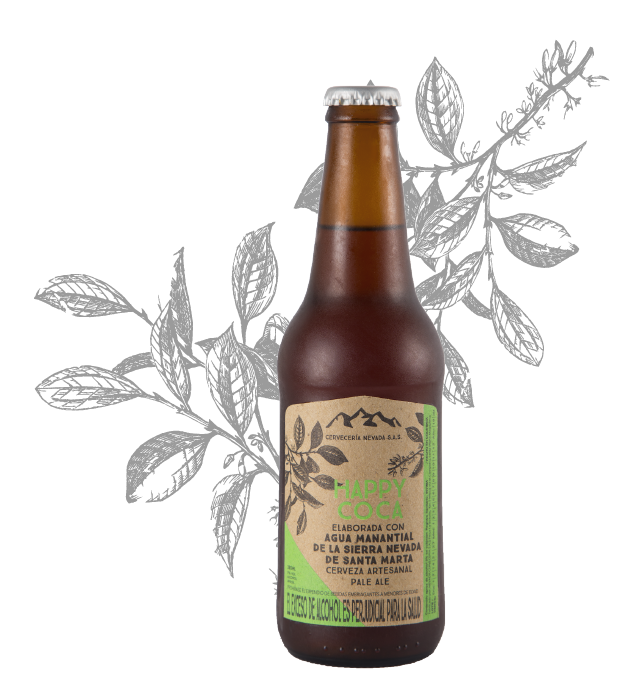
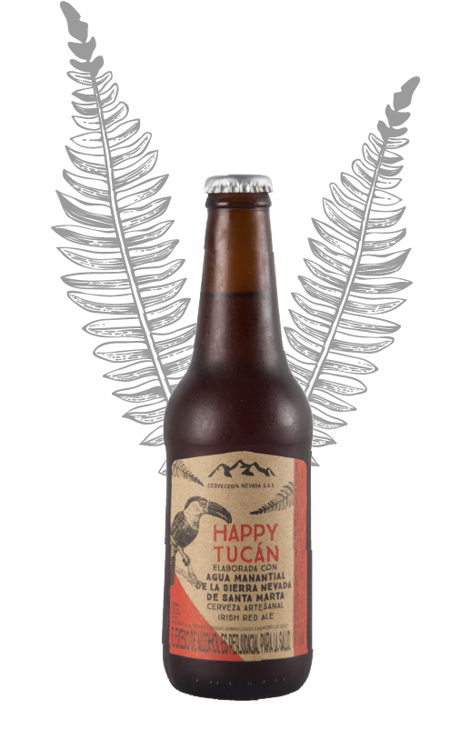
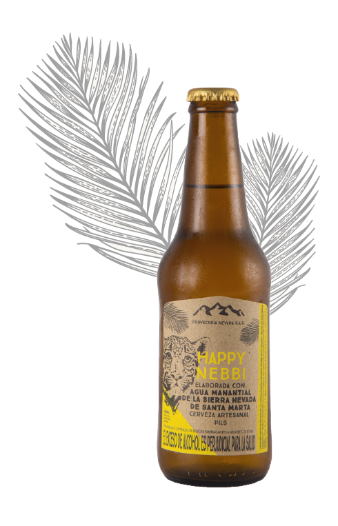
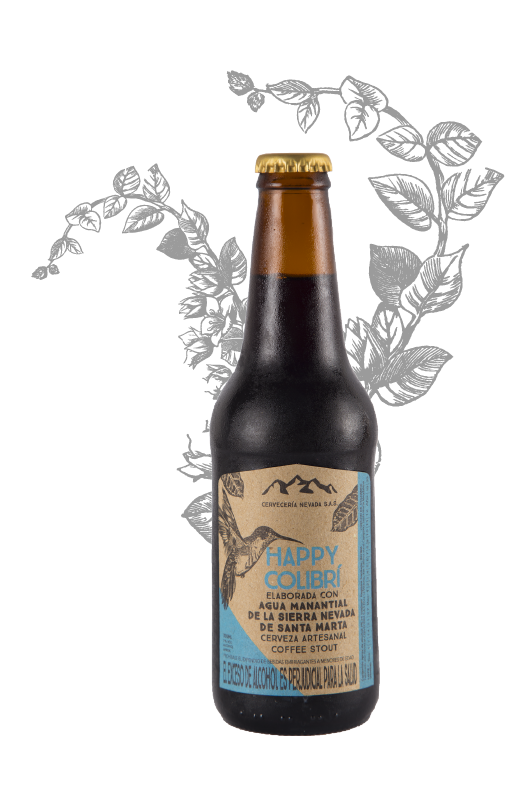

HAPPY COCA
Lleva en ella toda la magia de la selva.
Dicen que es refrescante y conquista
con su amargura y sabor aromático.
PALE ALE
5% Alcohol
ibu 70
maduración 4 semanas aprox


HAPPY TUCAN
Ella es insistente, sociable y divertida.
Con notas dulces acarameladas,
Su color rojo y aroma a tostado convergen
con su sabor suave y delicado.
Ella va bien con todo.
Irish Red Ale
Cerveza Roja Tipo Irlandesa
5% de alcohol
ibu 25
maduración 4 semanas aprox
HAPPY NEBBI
Su nombre carga el lenguaje Kogui
de los indígenas de la Sierra Nevada.
Dicen que es desafiante,
imponente, sin filtros y auténtica
Pils clásica dorada,
5% de alcohol
ibu 25
maduración 8 semanas aprox


HAPPY COLIBRI
Ella es especial solo aparece por temporadas.
Tiene un carácter fuerte y determinante.
ya que en su esencia lleva café orgánico
Ella es maravillosa
Coffee Stout
7% de alcohol
ibu 30
maduración 4 semanas aprox